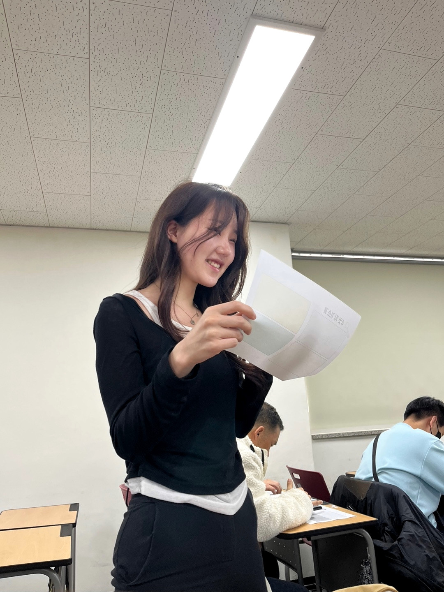
01 / TEAM PRACTICE
발표 연습으로 다진 전달력
팀원들과 의견을 맞추며 정확히 전달하는 연습을 반복했습니다. 차분히 설명하고 흐름을 정리하는 태도를 보여주는 장면입니다.
친구들과의 관계, 실습 현장에서의 모습, 가족과의 시간까지 한 사람의 성향이 드러나는 장면들을 차분하게 정리했습니다.
함께 준비하고, 맡은 역할을 해내고, 관계를 오래 이어가는 모습에서 안정적인 소통 방식을 보여줍니다.

팀원들과 의견을 맞추며 정확히 전달하는 연습을 반복했습니다. 차분히 설명하고 흐름을 정리하는 태도를 보여주는 장면입니다.
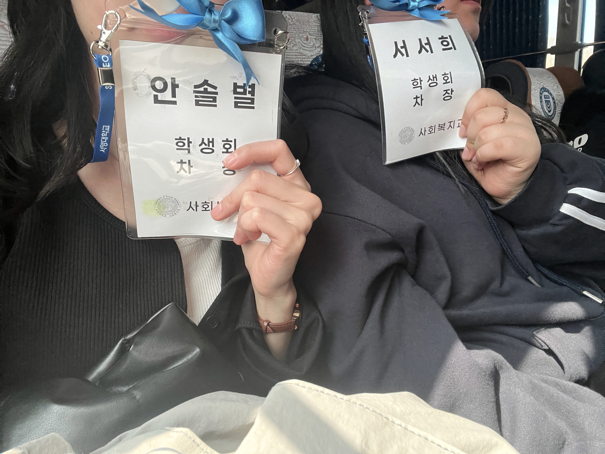
학생회 활동을 통해 먼저 움직이고 주변을 살피는 리더십을 배웠습니다. 함께 움직이는 조직 안에서 필요한 책임감을 익혔습니다.
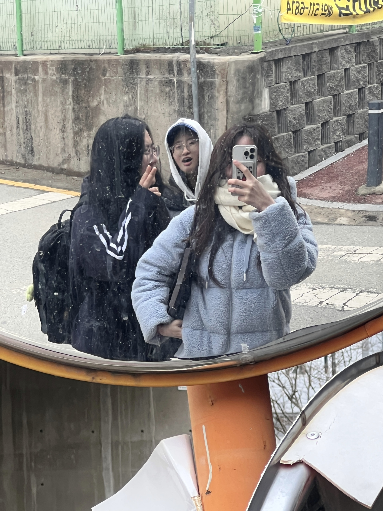
고등학교 시절부터 이어진 우정은 꾸준함과 배려가 만든 관계입니다. 사람들과 안정적으로 관계를 이어가는 성향을 보여줍니다.
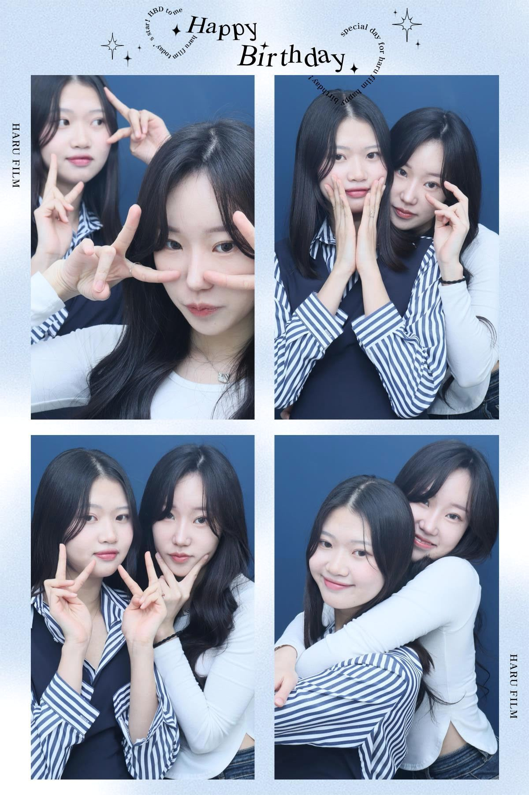
친구들과 자연스럽게 어울리는 모습에서 밝고 부드러운 소통 방식을 볼 수 있습니다. 함께 있을 때 분위기를 편안하게 만드는 힘이 있습니다.
아이들의 눈높이에 맞춰 다가가고 반응을 살피는 과정에서 세심함과 따뜻한 응대 태도를 보여줍니다.
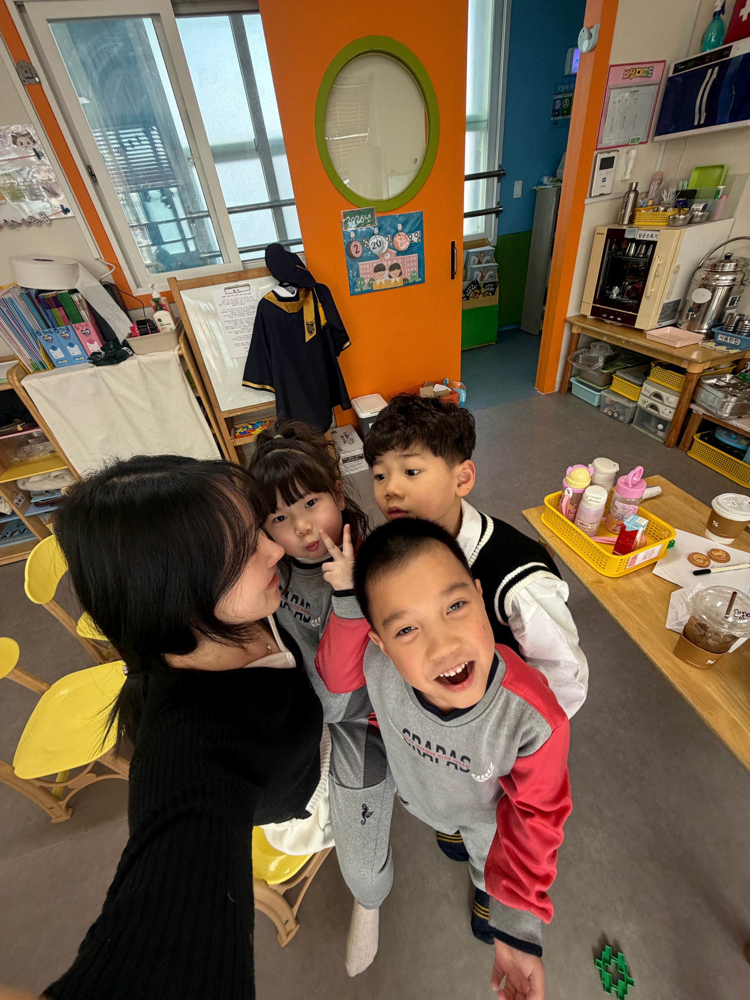
아이들과 가까이 마주하며 표정과 반응을 살피는 시간을 보냈습니다. 작은 변화에도 관심을 기울이는 세심함을 배웠습니다.
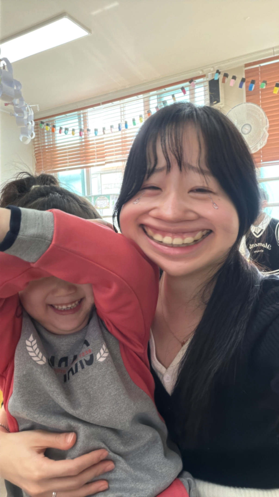
낯선 환경에서도 아이들이 편안함을 느낄 수 있도록 밝게 다가갔습니다. 따뜻한 분위기를 만드는 장점을 보여줍니다.
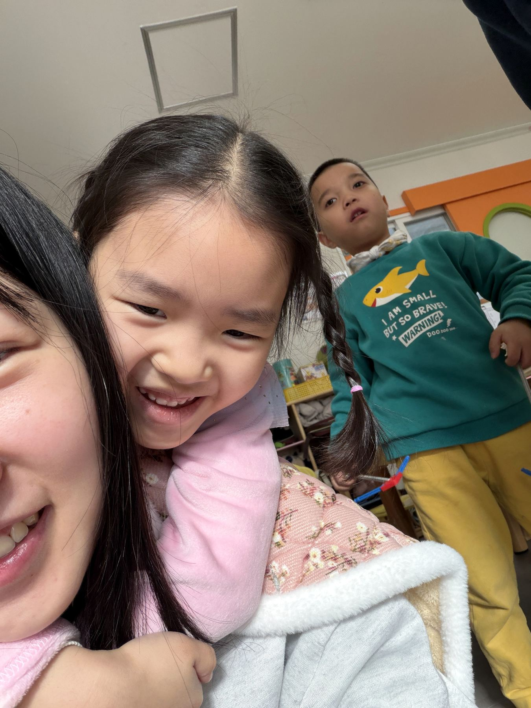
아이와 몸을 맞대고 호흡을 맞추며 신뢰를 쌓았습니다. 상대의 속도에 맞춰 기다리는 태도를 익혔습니다.
꾸준히 좋은 컨디션을 유지하기 위해 스스로를 회복시키는 방식도 중요한 태도라고 생각합니다.
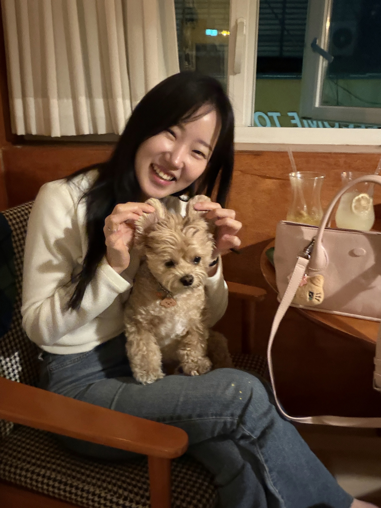
맡은 일을 마친 후에는 좋아하는 시간으로 에너지를 회복합니다. 꾸준히 일하기 위해 스스로를 관리하는 모습을 담았습니다.
가까운 사람들과의 관계 속에서 다정함, 배려, 안정감을 배우고 그것을 일상에서도 자연스럽게 실천합니다.
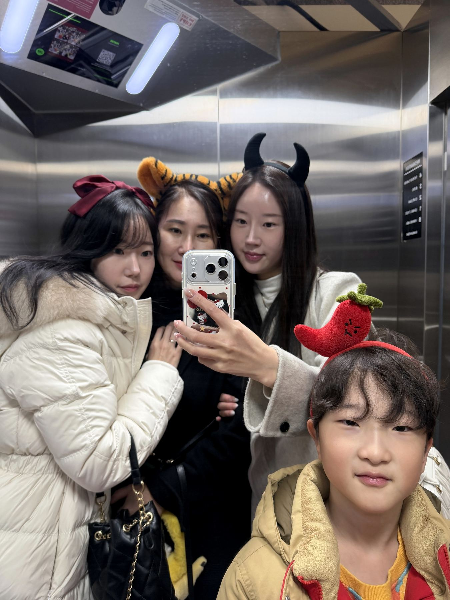
가족사진 속 자연스러운 표정은 믿고 기대는 관계에서 나옵니다. 가까운 사람들과 조화롭게 지내는 힘을 보여줍니다.
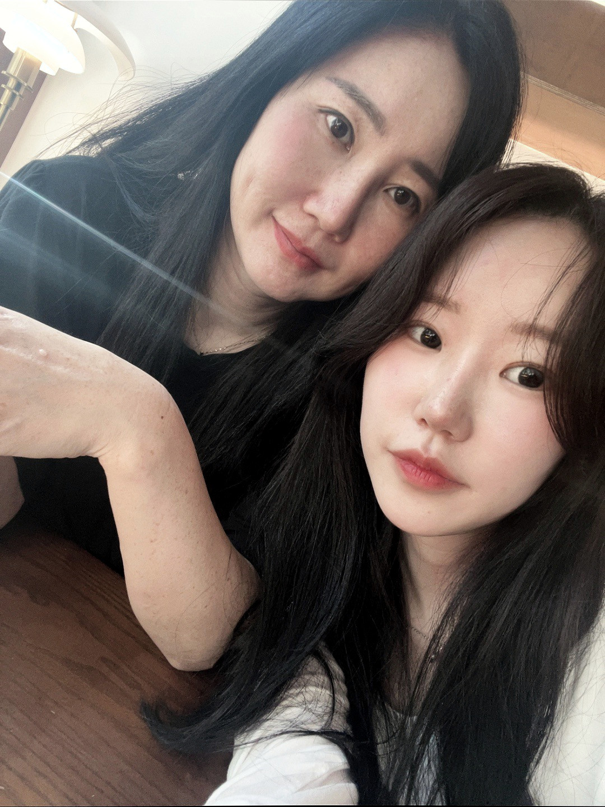
가족 안에서 배운 다정함과 존중은 사람을 대하는 기본 태도가 되었습니다. 가까운 사람에게도 변함없이 성실한 모습을 보여줍니다.
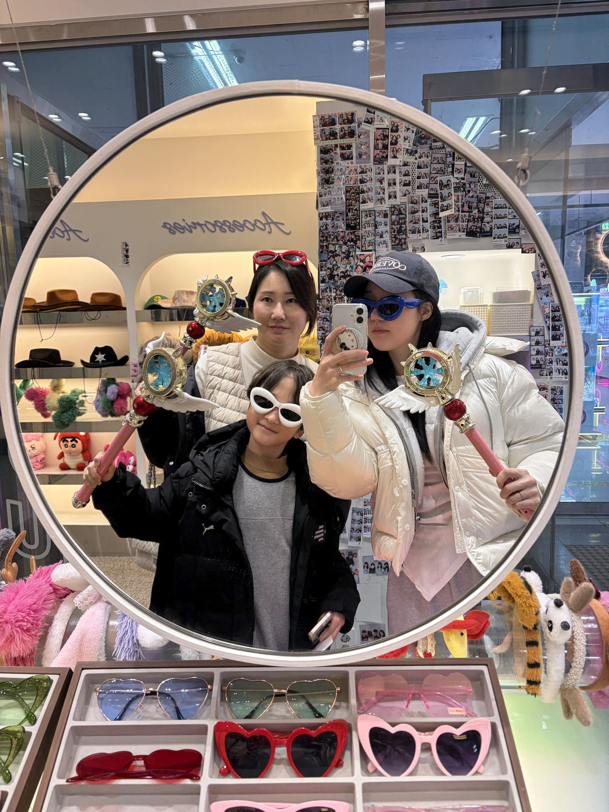
가족과 보내는 시간 속에서 자연스럽게 책임감과 배려를 배웠습니다. 서로를 살피는 분위기가 익숙한 사람입니다.
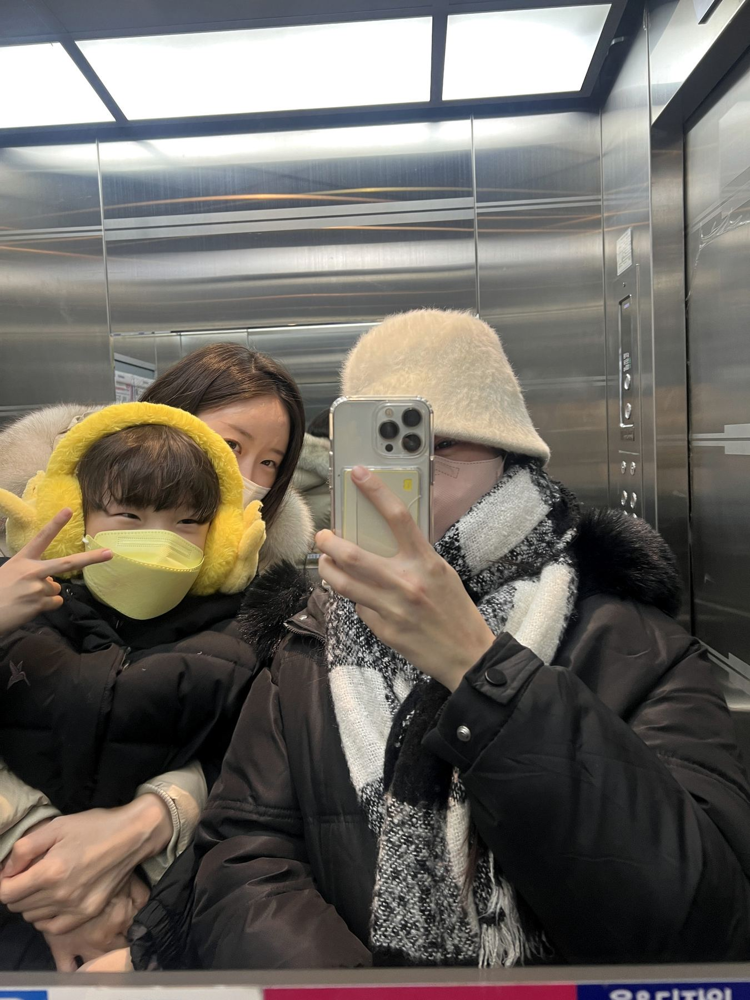
가족과의 짧은 외출에서도 즐거움을 나누며 관계를 다집니다. 주변 사람을 편안하게 챙기는 모습이 드러납니다.
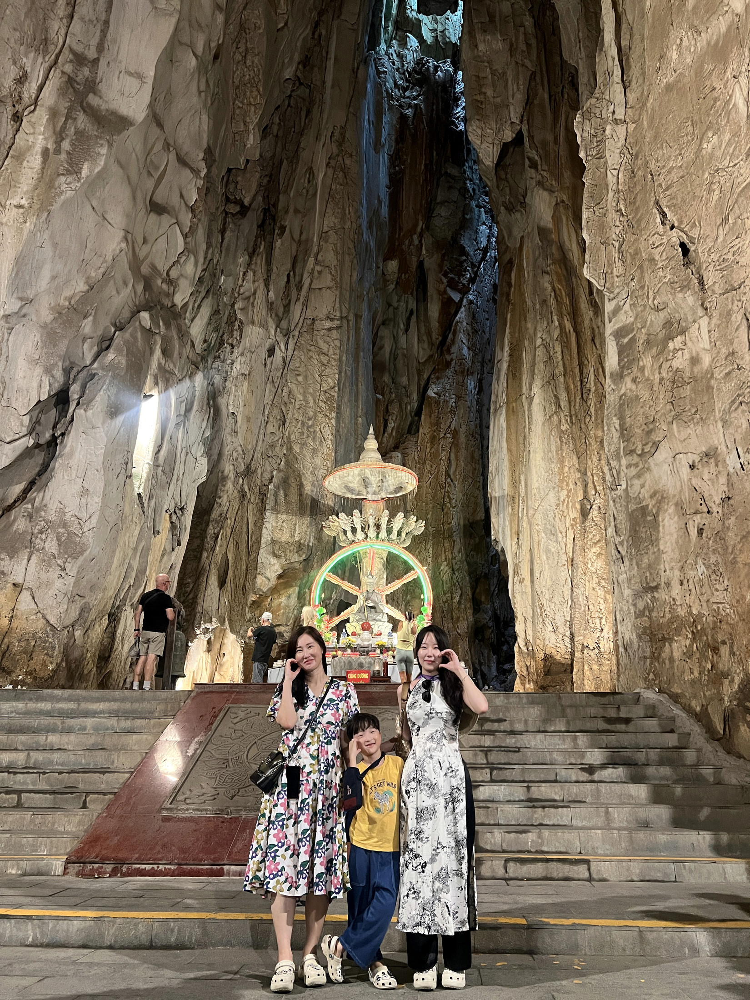
가족과 낯선 공간을 함께 경험하며 새로운 환경을 받아들이는 유연함을 키웠습니다. 차분히 보고 배우는 태도를 담았습니다.